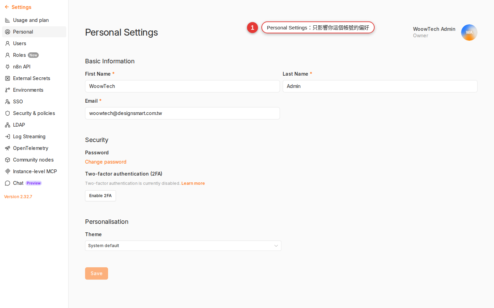

Settings reference
n8n has a pile of settings scattered across four places — the avatar at the top right, the Settings tab inside a workflow, the instance environment variables, and the admin pages IT looks after. This appendix sets out in one pass which setting lives where, who can change it, and what happens when they do. Come back here when Executions suddenly disappear, when a schedule runs at the wrong time, or when you want to change the interface language.
Why you want a quick reference
n8n does not actually have that many settings. The problem is that they are split across several layers — you flip a switch and it turns out that switch only affects you; or you hunt through your own Settings for something only an admin or an environment variable can change. Cases we have really hit:
- "Switch the interface to Chinese for me" — that is not something Personal can change. n8n community has no UI language dropdown; it takes the instance's
N8N_DEFAULT_LOCALEenv var, so ask IT. - "Set the Schedule node to local time for me" — that is the workflow-level Settings tab, or ask IT to change
GENERIC_TIMEZONE. - "The execution I ran last week is gone!" — that is the instance-level
EXECUTIONS_DATA_MAX_AGE; the default of 336 hours (14 days) auto-purges it, you have no permission to change it, so ask IT. - "I pressed Manual Execute but there is no record on the Executions page" — that is Save manual executions in the workflow Settings. The official n8n instance default is actually on (
EXECUTIONS_DATA_SAVE_MANUAL_EXECUTIONS=true), but plenty of company IT teams turn it off to save DB space, so not seeing it on your instance does not mean anything is broken — it has been overridden.
This appendix sorts settings by "can you change it / who does it affect" into two groups — Personal (your own screen, change it any time) and Workspace / Instance (shared across the company, admins or env vars only). Once that split is clear, you will know where to look and who to ask for 90% of the settings problems you hit.
.env or docker-compose file separately, or the new machine will behave completely differently.Two layers of settings: Personal vs Workspace
Get the mental model up first. n8n settings come in two layers — one is your own screen preferences, the other is how the whole instance behaves. Change the wrong layer and nothing happens.
| Level | Where to change it | Who it affects | Who can change it | Typical example |
|---|---|---|---|---|
| Personal (your account) | The avatar at the top right → Settings | Only you | You | Interface language, theme, notification preferences |
| Workflow (one workflow) | Open the workflow → the Settings tab at the top | Every run of this one workflow | Anyone with edit access to this workflow | Timezone, Error Workflow, the Save options |
| Instance (the whole n8n instance) | Environment variables in .env or docker-compose; some admin pages |
Everyone in the company | Admins or IT only | Execution retention, the default timezone, the base URL |
Personal settings: your account only
Click the avatar next to the three dots in the bottom-left corner → Settings, and n8n opens the Personal settings page. These settings are tied to your account (stored in the n8n DB) and have nothing to do with your colleagues.

| Option | Possible values | What it means / notes |
|---|---|---|
| Personal details | First name / Last name / Email | The email is also your sign-in name; if the owner is managed by environment variables, this is locked read-only. |
| Password | Change it | This is your sign-in password. At companies running SSO / SAML / LDAP the field may be disabled. |
| Two-factor authentication (2FA) | Enable / disable | The block only appears if the instance has 2FA turned on. Once enabled you pair it with a TOTP app (Google Authenticator and the like). |
| API Keys | Create / revoke | Used to call the n8n REST API (for example, CI/CD importing workflows automatically). Not the same thing as credentials. Once revoked, every automation using that key gets a 401. |
What is not here: Personal Settings has no Language dropdown, and no Theme or notification-preference toggles — in the community edition none of those are on this page at all. The UI language is decided by the instance's N8N_DEFAULT_LOCALE (see Instance-level settings below); light and dark follow your OS or browser and are not an n8n option. |
||
N8N_DEFAULT_LOCALE (see below), and the whole instance switches together; there is no per-person choice.Workflow-level settings: open the workflow and find the Settings tab
Open any workflow and you will see the tabs Editor / Executions / Evaluations / Settings across the top of the screen. Click Settings and you are in that workflow's own settings. These options affect this one workflow only and touch nothing else.
| Option | Default | When to change it |
|---|---|---|
| Execution order | v1 (recommended) / v0 (legacy) | Always v1 for a new workflow: with several branches it guarantees each node fires only once. You only need to touch this when an old workflow is coming up from v0. |
| Timezone | Follows the instance (GENERIC_TIMEZONE, default America/New_York) |
Any workflow using a Schedule or Cron node has to set this — choose your IANA timezone (for example Europe/London), or the "every day at 9 in the morning" from Chapter 10 runs on the instance clock rather than your intended local clock. |
| Error Workflow | None | Point at an error-handling workflow — when this workflow fails, that one fires automatically. Use it for central notifications or compensating logic; see Chapter 17. |
| This workflow can be called by (commonly called the caller policy) | Any workflow / Workflows in same project / Only workflows I own / Only specified workflows | Which other workflows may call this one with the Execute Workflow node. You need it when a team shares sub-workflows. |
| Save failed production executions | Default (Save) | The instance default is all. Strongly recommended to leave it — without the data you cannot see a node's input when something fails, which makes debugging painful. |
| Save successful production executions | Default (Save) | The instance default is all. Only with the data saved can you see each node's data on the Executions page; without it you get a result summary only. When the DB is tight, this is the one to turn off on its own. |
| Save manual executions | Default (Save) | The official instance default is true — after you press Execute Workflow the Executions page has a record you can debug from. Some company IT teams set the instance default to false to save DB space; this toggle overrides it. |
| Save execution progress | Default (Do not save) | Writes every step to the DB. Worth turning on for a long, heavy workflow, because one that dies part-way can resume from where it stopped; but the frequent writes slow the run down. |
| Timeout Workflow / Timeout After | Off (follows the instance EXECUTIONS_TIMEOUT, default -1, no timeout) |
Turn it on and enter hours / minutes / seconds. A single execution that runs over is canceled. It is a safety net — a stuck workflow will not eat resources forever. One hour is a conservative setting. |
| Redact production / manual execution data | Off | Masks node input/output when the execution is saved. Turn it on for a workflow handling PII, medical records or payments: the Executions page shows that a run happened, but not what was in it. |
Instance-level settings: how the whole n8n behaves
These are written as environment variables (an .env file, or environment: in docker-compose) — you cannot see them in the UI and you cannot change them there, so moving one means asking IT or an admin. Knowing what they mean is what stops you asking IT about a pile of things that were never in the UI.
| Environment variable | Default | What it does |
|---|---|---|
GENERIC_TIMEZONE |
America/New_York |
The default timezone for the whole n8n instance — every workflow that has not set its own Timezone follows it. Ask IT to set it to the organization’s intended IANA timezone; Europe/London is one example. |
TZ |
Depends on the base image | The timezone of the Node.js process itself. In practice set it the same as GENERIC_TIMEZONE, so log times and workflow times do not disagree. |
EXECUTIONS_DATA_MAX_AGE |
336 (hours = 14 days) |
How long execution records survive before they are cleared automatically. Raise it to keep them longer (for example 720 = 30 days); lower it if the DB keeps filling up. |
EXECUTIONS_DATA_PRUNE |
true |
Whether executions are cleared automatically. false means never delete — the DB grows and grows, so it is only worth it for short-term debugging. |
EXECUTIONS_DATA_SAVE_ON_SUCCESS |
all |
The instance default for whether a successful execution saves its data. Possible values all / none. A single workflow can override it. |
EXECUTIONS_DATA_SAVE_ON_ERROR |
all |
The instance default for whether a failed execution saves its data. Leave it at all. |
EXECUTIONS_DATA_SAVE_MANUAL_EXECUTIONS |
true |
The instance default for whether pressing Execute Workflow by hand puts a record on the Executions page. The official default is on; some companies set it to false to save DB space. A single workflow can override it. |
EXECUTIONS_TIMEOUT |
-1 (seconds; -1 means no timeout) |
The instance default ceiling, in seconds, for one execution. A single workflow can override it in Settings. 3600 means at most one hour across the whole instance. |
N8N_LOG_LEVEL |
info |
How much the n8n service itself logs. Only four values are legal: error / warn / info / debug. IT will switch to debug temporarily when chasing a strange bug. There is no verbose or silent — either one is treated as an illegal value. |
N8N_HOST / N8N_PORT / N8N_PROTOCOL |
localhost / 5678 / http |
The address the service is served on. Together with WEBHOOK_URL below, they decide what the webhook URL the outside world receives looks like. |
WEBHOOK_URL |
Built from host/port/protocol | The external URL the Webhook node shows you to copy — behind a reverse proxy you have to set it to the public domain by hand, or the URL you hand out is an internal IP nobody can use. |
N8N_DEFAULT_LOCALE |
en |
The UI language for the whole instance. It only takes base tags (en / de / zh), not regional identifiers like zh-Hant / zh-TW / de-AT — those fall back to en. Individual users have no UI to change it themselves; changing it switches the whole company at once. |
EXECUTIONS_MODE |
regular |
The execution mode: regular (a single process) or queue (workers running against Redis). You only need queue mode at volume. |
docker compose restart n8n, or restart the system service); it does not apply the moment you save. That is also why these are not in the UI — it stops people assuming the change landed and blaming n8n when it did not.Execution retention: why your records disappear
The community edition auto-purges after 14 days (336 hours) by default, and this is the trap most people fall into. Every run of a workflow produces one execution record — along with each node's input / output data, if the Save options are on — sitting in PostgreSQL / SQLite. Over time the DB swells, so n8n's official default is 14 days; without it, a fresh instance running for three months turns up with a 20GB DB.
What that means:
- An execution from 15 days ago is simply gone, successful or failed — not in the UI, not in the DB.
- The execution's node input / output data goes with it — if you want to look back at what the API returned that day, it is not there.
- What you did to outside systems (the Slack messages, the Airtable rows) is of course still there — what got deleted is only n8n's own execution record.
Three ways to keep them longer:
-
Ask IT to change the environment variable
Ask IT to move
EXECUTIONS_DATA_MAX_AGEfrom 336 to whatever you need (the unit is hours, not days). 30 days is 720, 90 days is 2160. -
Save the important data yourself
Put a Google Sheets / Airtable / DB node at the end of the workflow and write the important parts of each run (input, time, result) somewhere outside — that way your audit trail is there however long n8n keeps executions. This is the most reliable approach for audit compliance.
-
Dump the whole DB on a schedule
Have IT run a daily
pg_dumpbackup of n8n's PostgreSQL. Once executions are purged you can still restore from a dump when you need to go back. Suits companies with strict audit requirements.
EXECUTIONS_DATA_PRUNE to false means never clear anything — fine for short-term debugging, but there are plenty of cases of a DB blowing up over the long run. If you genuinely need long retention, use "save to a sheet / DB plus a scheduled dump" instead of asking n8n to keep everything forever.Timezone precedence, three layers: why schedules run at the wrong time
"I set it for 9 in the morning, so why does it run at 5 in the afternoon?" — nine times out of ten the Timezone was never set. n8n decides a workflow's timezone in three layers, highest first:
| Precedence | Where it is set | How to write it | Scope |
|---|---|---|---|
| 1 (highest) | Written explicitly in a node expression | {{ $now.setZone('Europe/London').toFormat('HH:mm') }} |
Only that expression, that one calculation |
| 2 | Workflow → Settings → Timezone | Pick Europe/London from the dropdown |
Every node in this workflow, the Schedule / Cron trigger included |
| 3 (lowest) | The instance environment variable GENERIC_TIMEZONE |
IT edits .env |
Every workflow that has not set a Timezone |
With none of them set you get America/New_York — that is the official n8n default for GENERIC_TIMEZONE (not UTC, which is what most people assume). So a fresh installation can run a schedule at the wrong local time unless you set the timezone deliberately; the offset varies by location and daylight saving. TZ (the Node.js process timezone) follows the base image default instead, and the official Docker image is UTC — the two variables end up out of step, log times and workflow times may not line up, so in practice set GENERIC_TIMEZONE and TZ to the same value.
Note: the English edition uses Europe/London only as a valid IANA example. Replace it with the timezone for your users. Recommended approach:
-
Set the instance floor first
Ask IT to add both
GENERIC_TIMEZONE=Europe/LondonandTZ=Europe/Londonto.envand restart. New workflows then default to local time and you do not have to set each one by hand. -
Set it again on the workflow, for safety
For any workflow using Schedule / Cron, still go into the Settings tab and pick
Europe/Londonexplicitly — then even if IT later changesGENERIC_TIMEZONE, or you move to a different n8n, your schedule times do not move. -
Only write it in an expression for cross-timezone data
Use
.setZone()in an expression only when you are handling data across timezones (for example, showing a UTC timestamp in local time) — do not write it in every node, that is a maintenance nightmare.
The settings you will change most often
Three checklists, one per role. Work through the one that fits and 90% of the day-to-day problems never happen.
A new user's first day (all of it is yours to do):
- Personal settings → check that First name / Last name / Email are right
- If you will use the API: Personal settings → API Keys → create one and store it safely
- Turn on 2FA alongside your password (if the instance has the feature enabled — see Chapter 2)
- Want a Chinese interface → you cannot change this yourself; ask IT to set the instance-level
N8N_DEFAULT_LOCALE
Every time you build a workflow (3 minutes):
- Settings tab → set Timezone to
Europe/London(or your local IANA zone; otherwise the workflow uses the instance setting, whose documented default isAmerica/New_York) - Point Error Workflow at your handler workflow (build one first if you do not have it — see Chapter 17)
- While building, confirm Save manual executions is Save (if IT turned the instance default off, force it on here)
- Turn on Timeout Workflow for anything long-running (one hour, say)
- Add Redact production execution data for PII or payment data
What IT / admins decide before deploying (once):
- Set
GENERIC_TIMEZONE+TZtoEurope/London - Set
WEBHOOK_URLexplicitly to the public domain (required behind a reverse proxy) - Decide
EXECUTIONS_DATA_MAX_AGEfrom your audit requirements (14 days / 30 days / 90 days) - Generate a strong
N8N_ENCRYPTION_KEY, the key that encrypts credentials, and back it up (replace it and no existing credential can be decrypted) - Move the DB from the built-in SQLite to PostgreSQL (required in production)
N8N_ENCRYPTION_KEY is the master key that encrypts and decrypts all credentials — replace it and every existing credential turns into noise nothing can read. Settle it at the first deployment, put it in a password manager, and never change it afterwards.Common pitfalls
-
The Schedule / Cron node runs at the wrong time
99% of the time the workflow's Timezone was never set, so it ran on the instance default (officially
America/New_York, not UTC). Open the workflow → Settings tab → set Timezone toEurope/London→ Save. If the instance has noGENERIC_TIMEZONEeither, ask IT to add it while you are at it. The new timezone applies from the next trigger; a run already scheduled still uses the old time. -
Last week's records are gone from the Executions page
The community edition auto-purges after 14 days by default — past that they are cleared and there is nothing to recover on the n8n side. To keep them longer, change
EXECUTIONS_DATA_MAX_AGE(ask IT). The long-term fix: write the important data to a Google Sheet / DB and do not treat n8n executions as your audit trail. -
I cannot see an Instance settings page or an admin page
Most instance settings were never changeable in the UI in the first place; they are all environment variables. Not finding them is not a permissions problem, it is that they are not in the UI at all. Some admin-only pages (Users management, for example) are visible only to the owner / admin roles — ask IT, or whoever set this instance up.
-
I cannot find the "Personal → Language" dropdown
In the official n8n community edition, Personal settings has no UI language dropdown — you are not going blind, it simply does not exist. The UI language comes from the instance's
N8N_DEFAULT_LOCALEenv var (and only base tags likeen/zh, notzh-TW/zh-Hant); changing it means restarting the whole n8n, and it affects everyone in the company. Tutorials online that say "switch it to Simplified Chinese" are mostly older screenshots or a third-party fork. -
I changed the workflow Settings but Executions still saves nothing
Three things to check. (a) Did you actually press Save on the workflow Settings, rather than flipping the toggle and walking away? (b) Did you press Execute Workflow (manual), or did something outside trigger it? Manual runs go through Save manual executions and production runs through Save successful / failed production executions — three independent switches. (c) If the workflow Settings say "Default", they follow the instance's
EXECUTIONS_DATA_SAVE_*env vars, so if IT turned the instance default off, Default means off. To force the save, pick Save explicitly in the workflow Settings. -
The URL the Webhook node gives me is
localhostand nothing outside can call itThe instance has no
WEBHOOK_URLset, so all n8n knows is its own host. Ask IT to addWEBHOOK_URL=https://n8n.your-company.example(protocol and domain included) and restart. After that, the URL the Webhook node shows is the one the outside world can actually reach. -
The Error Workflow never fires
A few common causes: (a) the Error Workflow itself is not switched to Active; (b) its trigger is not an Error Trigger node; (c) the failing workflow's Settings never named this Error Workflow. Check all three — see Chapter 17.
-
I changed an env var and nothing seems to have happened
Environment variables do not hot reload — after editing
.envor docker-compose you needdocker compose down && docker compose up -d(or a system service restart) before the new values are read.restartis sometimes not enough (especially after editing docker-compose.yml), so do a full down and up.
FAQ
Can Personal settings be wiped? Are they still there on another device?
Does an n8n backup include settings? How do I take them to another machine?
.env or docker-compose.yml, not in the n8n DB. Moving machines means copying the .env file separately (above all, bring N8N_ENCRYPTION_KEY with you, or the new machine cannot decrypt the old credentials).Is there a button that exports every setting / workflow?
n8n export:workflow --all --output=./backup.json and n8n export:credentials --all --decrypted --output=./cred.json (the decrypted file holds plaintext passwords; keep it safe); (b) Personal and instance settings have no export command — Personal lives in the DB, instance in env vars, so back each up on its own. For a company-grade backup, dump the whole PostgreSQL and copy .env.Do settings sync when the same account signs in on several devices?
Do the settings differ between the free Community edition and Cloud / Enterprise?
I want the interface in Chinese — why is there no Language in Personal Settings?
N8N_DEFAULT_LOCALE env var (default en), and changing it affects the whole company — so it has to go through IT. n8n also only takes base tags (en / de / zh ...) and not regional codes (zh-Hant / zh-TW / de-AT), which fall back to en. On top of that, n8n's official GitHub master currently ships only the English locale file and other languages come from community translation on Crowdin — so even with zh set, untranslated strings still show in English. That is why plenty of users simply stay on English.My workflow only runs now and then — can I schedule "the 15th of every month" in the UI?
0 9 15 * * = 9 in the morning on the 15th of each month). This workflow's Timezone has to be set to Europe/London in the Settings tab, or 9 o’clock is interpreted in the instance timezone rather than the intended local timezone.Can I give myself admin rights and change instance settings?
.env on the server. Either ask an existing admin to change your role, or ask IT to change the env var. This is a safeguard, not a bug.Are credentials Personal or Workspace? Can other people use the ones I create?
Notification email never arrives — what should I check?
N8N_EMAIL_MODE=smtp and the N8N_SMTP_* env vars — check with IT), because with no SMTP nothing goes out however many boxes you tick; (c) check that the mail did not land in your spam folder or get blocked by the company mail filter. Work through them in that order.